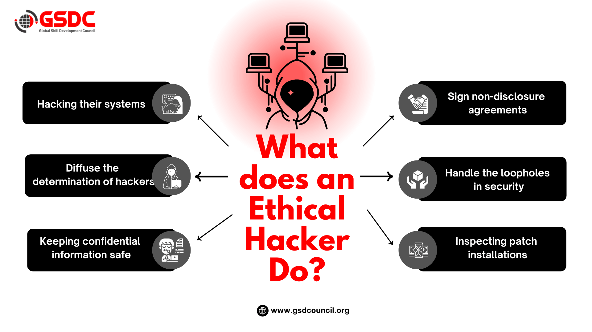

OBJECTIVE
Part of my Ethical Hacking course, these labs involved solo exercises testing different types of security vulnerabilities, including XSS, CSRF, and Shellshock attacks, in a controlled environment.
Each lab required analyzing vulnerabilities, designing and executing attacks, and then implementing mitigation strategies.
The project emphasized hands-on, practical learning and problem-solving, giving me a deep understanding of how security threats work and how to defend against them.
